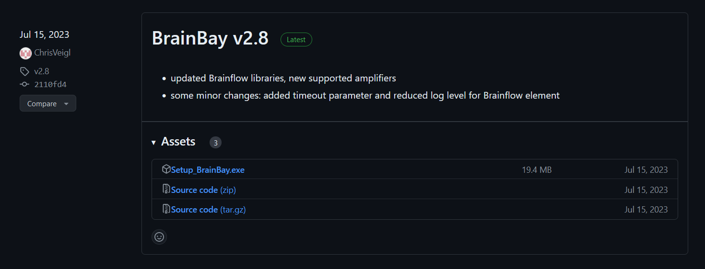
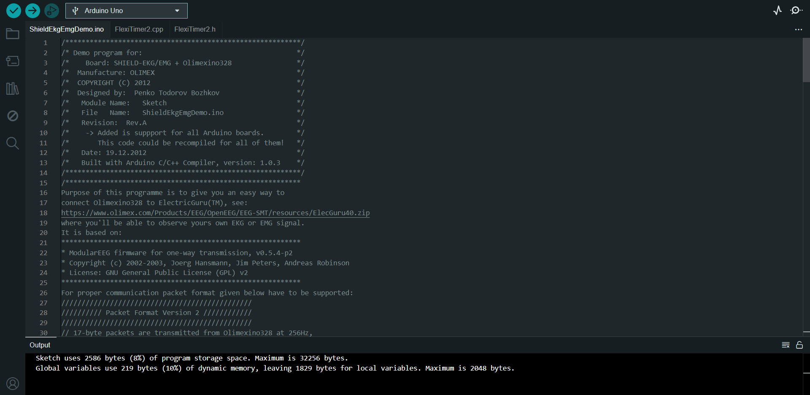
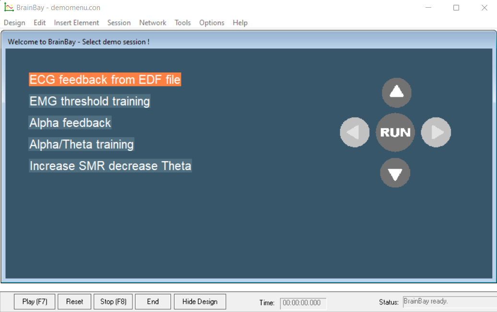
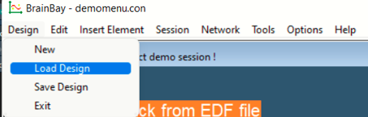
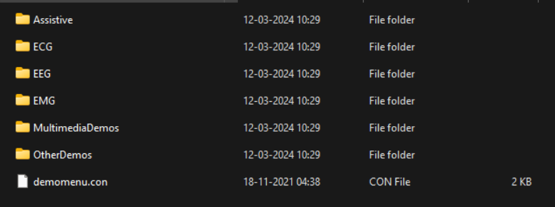
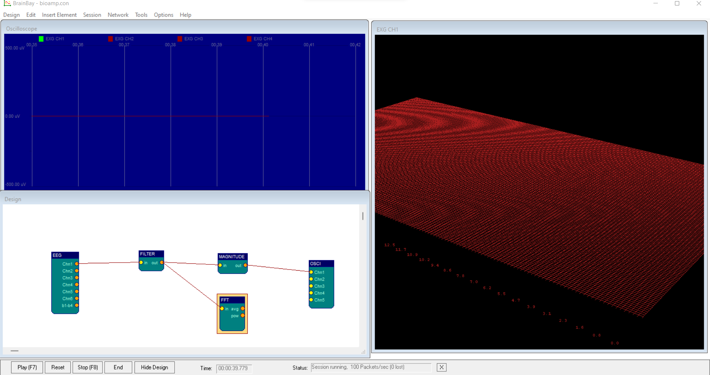
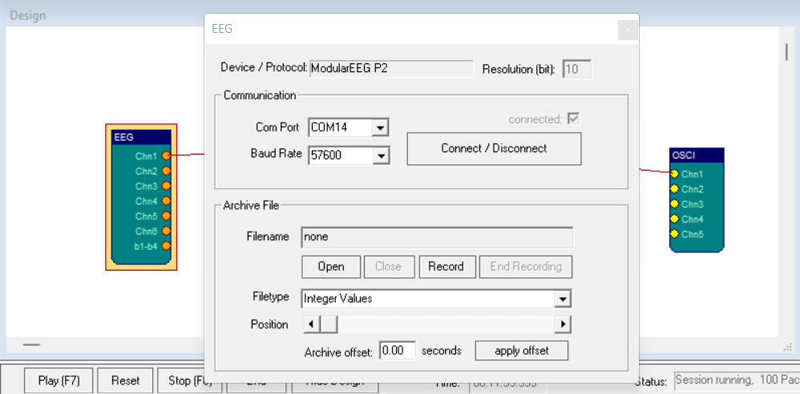

BrainBay - A visual programming language
In this experiment, we will look at how to connect the BioAmp EXG Pill and Arduino that we setup to BrainBay is an open source bio- and neurofeedback application and a visual programming language. It also offers some features for the creation of alternative Human-Computer-Interfaces (HCIs) such as facetracking via webcam, EMG signal pattern recognition.
Installing BrainBay
The first step is to install BrainBay software. The link for the installation can be found here

Arduino script
Once the app is installed, you will need an Arduino script to communicate with the app through a serial port. The program was design by Olimex to give users an easy way to connect Olimexino328 to ElectricGuru(TM).
The same code was implemented by Upsidedownlabs to connect their BioAmp EXG Pill to Brainbay.
The code for this script can be found here. Run this script and upload it to the Arduino board. Make sure you remember the serial port the Arduino transmits data to. In the case of my Windows laptop, it was COM14.

Loading a design in Brainbay
As soon as you open the app, you will be prompted with this interface. You can either choose start of with their give options, load an existing sketch from a .con file or start a new sketch altogether.

For this demonstration, I have created a simple design which displays EEG on a Oscilloscope and plots an FFT graph.
You can download the sketch for your own use here
Once you have downloaded the sketch, click on ‘Design’ and then ‘load design’. You will be given an option to upload design to work on. Upload the BioAmp.con file you just downloaded.

you will also be able to choose from pre existing designs that are installed with the software.

Oscilloscope and FFT
Once you open the design you will be able to see a blank oscilloscope, a static FFT graph and a design. The elements presently have no data as they aren’t connected to the right serial port.
To make any changes to the design you need to go to the ‘Design’ window on screen. Currently this design takes input from and EEG, filter the data based on frequency between 1 and 40 hz and sends the filtered data to an oscilloscope and a 3D FFT graph.

To connect our setup to this design, we need night click on the EEG node. You will then be prompted with a set of options including the one to connect to an active serial port. You have to click on the Connect/Disconnect button and ensure the box above it is ticked.

Once you connect the port to the design you will be able to see activity in the oscilloscope and FFT. As soon as the connection is done, you might see huge spikes and a lot noise in the FFT. This is normal and you will to do some trial/error and readjustments till you see the Oscilloscope has small waves and the FFT is mostly red in colour. This is similar to the FFT and data clarity discussed in the previous experiment with the spike recorder app.
.png)
Eyes open vs eyes closed
Once you are settled and the data acquisition is clear you will be able to see clear differences in the eye open and eyes closed states
Eyes open shows a more red FFT graph with very little activity and EEG waves with short amplitudes.
.png)
Eyes closed shows a more colourful FFT graph with EEG waves of bigger amplitudes implying the production of alpha and beta waves.
.png)